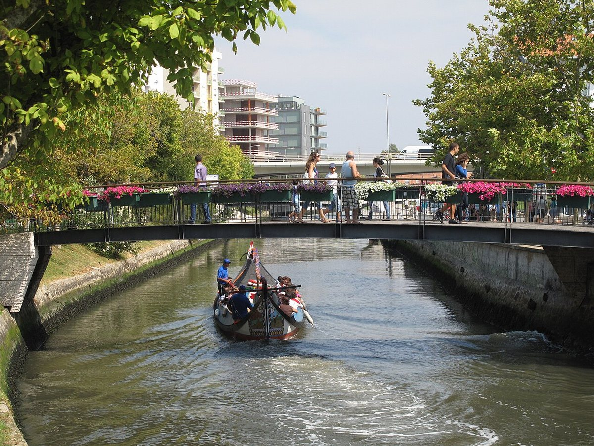
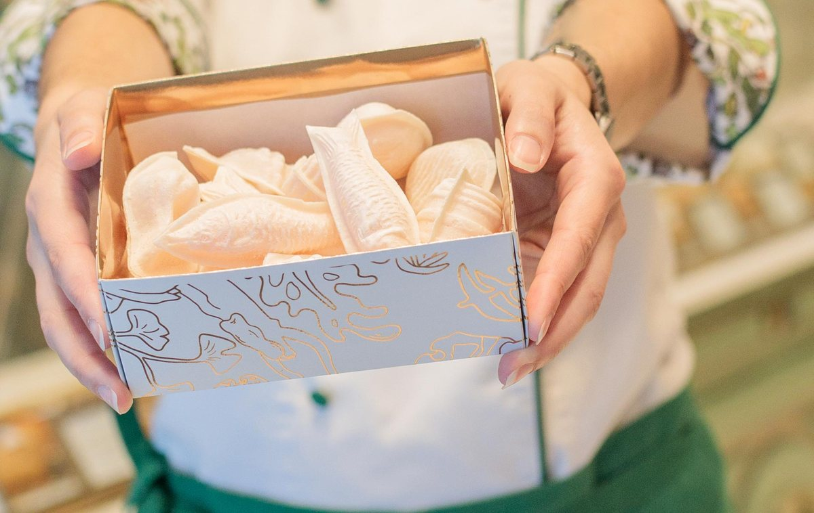
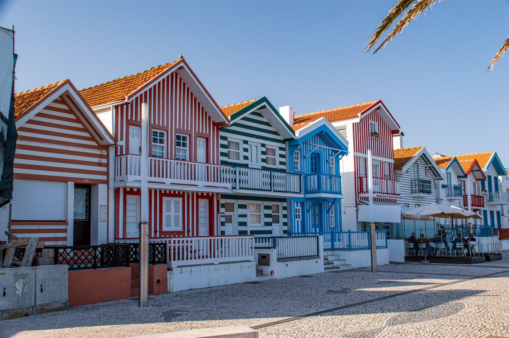

Canals, painted moliceiro boats and Art Nouveau facades — an easy morning south of Porto, home by mid-afternoon.
Built around a mid-morning arrival so the canal cruise lands before the midday crowds, with a long seafood lunch to close. Times are a guide — shift everything earlier or later by one train as you like.
Board the Urban (Linha de Aveiro) at São Bento — central, photogenic, and where trains wait on the platform well before departure. Validate your Siga card on the yellow pedestal first.
São Bento → Aveiro · ~1h15It's a flat 1 km (≈12 min) down Avenida Dr. Lourenço Peixinho to the central canal. Pause at the old station beside the new one — its facade is covered in beautiful blue azulejo tile panels.
Easy walkA 45-minute glide through the canals on a brightly painted moliceiro from the Rossio / Cojo pier. The best orientation to the city — you'll pass the salt pans, the fish market and the Art Nouveau waterfront. Book ahead in summer.
45 min · ~€15Aveiro's early-1900s wealth left a dense cluster of Arte Nova buildings — flowing facades, tile, wrought iron. Start at the Museu Arte Nova, then wander Rua João Mendonça and the Cojo canal banks. A gentler cousin to the Bauhaus stuff, but the craft hits the same note.
Self-guided · ~45 minThe local sweet: egg-yolk cream in thin wafer shells, shaped like shells and fish, sold from little wooden barrels. Confeitaria Peixinho is the classic name. Grab a few, then keep them for the train.
SnackLunch around Praça do Peixe (the old fish-market square) — grilled fish, lagoon eel if you're game, and a glass of crisp vinho verde from the surrounding region. Lively and unhurried.
~1h15Walk back to the station and catch the early-afternoon Urban home. No reservations on this train — your ticket works on any departure, so there's no rush if lunch runs long.
Aveiro → São Bento · ~1h15

Add Costa Nova, a 15-minute bus or taxi ride away, where the fishermen's palheiros are painted in bold vertical stripes right along the water. It's one of the most photogenic spots in Portugal — and very on-brand for a stripe-loving eye. Doing this turns the half-day into a relaxed full day, so plan a later return train.

The Urban train (Comboios Urbanos do Porto, Linha de Aveiro) is the one to take: cheap, frequent, and valid on any departure so you keep your flexibility. Skip the pricier express (IC/AP) unless you want the 55-minute ride. Times below are a representative pattern — always confirm the live timetable before you go, as services vary by weekday/weekend.
Fares load onto a €0.50 rechargeable Siga card, bought at any station machine. Keep it — top it up for other day trips (Braga, Guimarães) and skip the fee next time.
Touch your card to the yellow pedestal on the platform before every journey. The Urban ticket isn't tied to a specific train.
It's central and a small terminus, so platforms are a short walk and trains wait early. You can also board at Campanhã a few minutes later.
A weekday morning means quieter canals and better photos. Summer weekends get busy, especially toward Costa Nova.